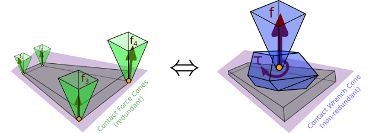

Abstract¶
Humanoids locomote by making and breaking contacts with their environment. Thus, a crucial question for them is to anticipate whether a contact will hold or break under effort. For rigid surface contacts, existing methods usually consider several point-contact forces, which has some drawbacks due to the underlying redundancy. We derive a criterion, the Contact Wrench Cone (CWC), which is equivalent to any number of applied forces on the contact surface, and for which we provide a closed-form formula.

It turns out that the CWC can be decomposed into three conditions:
- Coulomb friction on the resultant force,
- CoP inside the support area, and
- upper and lower bounds on the yaw torque.
While the first two are well-known, the third one is novel. It can, for instance, be used to prevent the undesired foot yaws observed in biped locomotion. We show that our formula yields simpler and faster computations than existing approaches for humanoid motions in single support, and assess its validity in the OpenHRP simulator.
Formula¶
Mathematically, this contact stability condition is a set of linear inequalities , where is the contact wrench, expressed at the central frame of the rectangular contact area, and is the stacked matrix of dual motion vectors given by:
The Coulomb friction cone on the resultant lies in the first four lines of . The following four lines correspond to the CoP condition. The last eight lines give the no-yaw-slippage condition.
Content¶
| Paper | |
| Poster and slides | |
| Source code | |
| 10.1109/ICRA.2015.7139910 |
Video¶
BibTeX¶
@inproceedings{caron2015icra,
title = {Stability of Surface Contacts for Humanoid Robots: Closed-Form Formulae of the Contact Wrench for Rectangular Support Areas},
author = {Caron, St{\'e}phane and Pham, Quang-Cuong and Nakamura, Yoshihiko},
booktitle = {IEEE International Conference on Robotics and Automation},
year = {2015},
month = may,
pages = {5107--5112},
doi = {10.1109/ICRA.2015.7139910},
}
Discussion ¶
You can subscribe to this Discussion's atom feed to stay tuned.
-

Attendee #1
Posted on
Is the total wrench expressed as a spatial force in link coordinates of the contact, or as a Cartesian force in world coordinates?
-

Stéphane
Posted on
The wrench in Proposition 2 is expressed at the central frame of the rectangular contact area. This frame has:
- Its origin at the center of the area (depicted in Fig. 2(B))
- Its -axis aligned with the long axis of the rectangular contact area (hence the half-length of the rectangle denoted by )
- Its -axis aligned with the short axis of the rectangular contact area (hence the half-width of the rectangle denoted by )
- Its -axis aligned with the contact normal, pointing from the environment to the robot's end-effector.
-
-

Attendee #2
Posted on
Do the CoP Equations (18) and (19) assume a horizontal floor? Or does the contact wrench condition also hold for inclined contacts?
-
Stéphane
Posted on
The condition holds for any contact orientation, be it a foot on the floor, a hand on a wall, etc. What Equations (18) and (19) assume is a planar contact area between the robot's end-effector and the environment. This area can have an arbitrary orientation with respect to the inertial frame.
-
-

Attendee #3
Posted on
For which application cases do you think additionally constraining the yaw torque becomes crucial, or the other way round, when is it also sufficient to only constrain the friction cone and CoP (e.g static/dynamic walking, highly-dynamic maneuvers)?
-
Stéphane
Posted on
We can enumerate all cases by reformulating the yaw-moment condition at the CoP, as shown in p. 82 of this manuscript. This equivalent condition can be written:
where is the yaw torque furthest away from inequality constraints (its formula is given in the manuscript), is the friction coefficient, is the normal contact force, and is the distance from the CoP to the nearest edge of the contact area.
Hence, there are three cases where this constraint becomes easier to violate:
- Friction is low
- Normal force at contact is low, e.g., the robot is about to lift its foot
- CoP is close to the edge of the contact area
The last condition typically depends on your trajectory optimization: if you lower-bound your by other means, you may get a yaw-moment range so large that you don't need to consider the yaw constraint explicitly. One example of this are the successive MPC implementations from Nicola Scianca et al.: initially CoPs from their trajectory optimization were on the edge of their contact areas, but in a later implementation they constrained the CoP to be close to a point well inside the area. The former was much more sensitive to yaw slippage than the latter.
-
Feel free to post a comment by e-mail using the form below. Your e-mail address will not be disclosed.